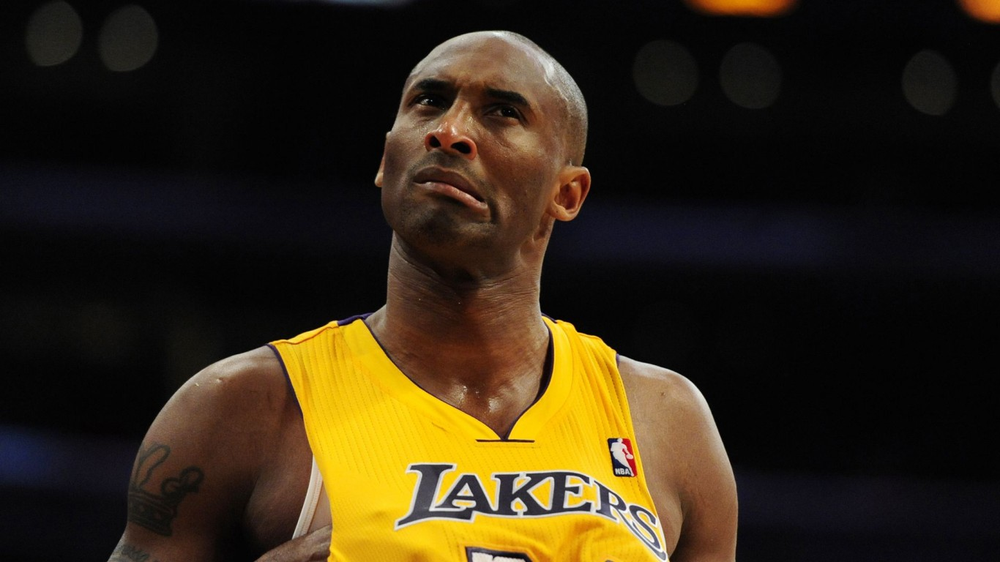
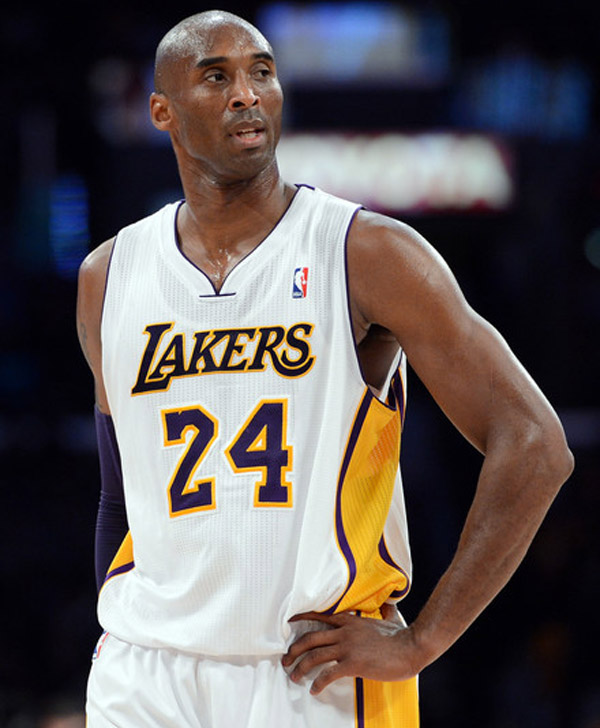
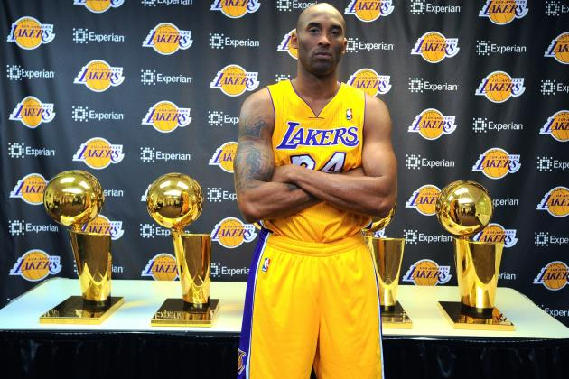
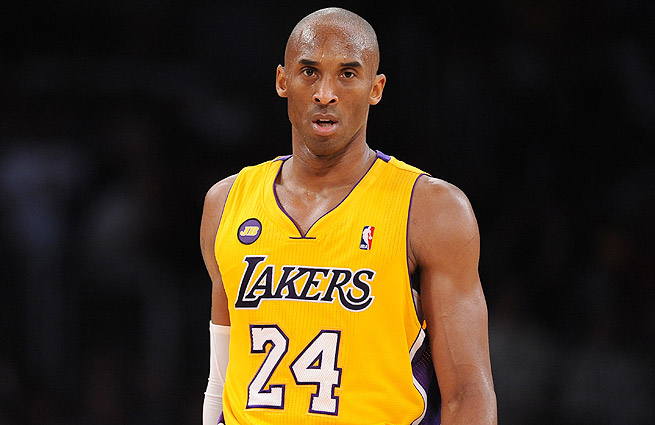
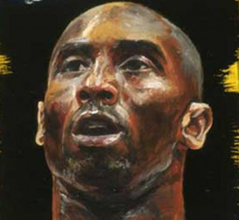

Kobe Bryant
——The man we love
科比·布莱恩特（英语：Kobe Bryant，1978年8月23日－）是一名美国NBA篮球运动员，现效力于洛杉矶湖人，场上位置为得分后卫，而在迈克·德安东尼的指导下也曾担任控球后卫。在2005-2006赛季对多伦多猛龙的比赛中，科比拿下单场职业生涯最高的81分。 至2014年赛季为止，科比总共为湖人拿下5次NBA总冠军（2000-2002年3连霸，2009-2010年2连霸），2次NBA总冠军MVP，16次入选NBA明星赛，1次NBA年度MVP，4次NBA明星赛MVP，2次NBA得分王（2006、2007），以及2 届奥运会金牌（2008年和2012年）。生涯总得分31,617分
早期生活
科比是前费城76人队篮球员乔·布莱恩特的儿子。科比的父母使用了他们在餐馆菜单上看到的名品－日本的神户牛排（Kobe steak）为儿子命名[2]。根据科比的自述，他从四岁开始已学会打篮球；六岁时全家移居到意大利，他的父亲在那里开始了他的欧洲职篮生涯。科比逐渐适应了意大利的生活方式，并且能够说流利的意大利语及西班牙语[3]，更曾认为意大利是他的第一个家。
科比一家人在1991年搬回美国，在费城郊区的劳尔梅里恩高中（Lower Merion HS）度过高中篮球生涯，在这段期间常会到天普大学的体育馆打球，因此认识了天普大学的明星球员，也就是后来成为队友的埃迪·琼斯。当时的科比球技已十分突出，在高中最后一年场均30.8分、12个篮板、6.5个助攻、4个抢断和3.8个盖帽[4]，率领球队获得53年以来的第一个州冠军，在高中球季累积的2883分更打破了名人堂球星威尔特·张伯伦保持的宾州东南区记录。
科比在美国大学入学考试中，1080分的成绩本可保证录取许多一流大学[5]，像是北卡罗莱纳大学或杜克大学的篮球奖学金，然而他最终放弃了原来的计划，选择绕过大学篮坛直接进入NBA。身为史上第一个仅17岁的NBA高中生球员，这个大胆的决定在当时也引起了广泛的争议。
NBA生涯Spatulas
新秀的三年
1996-97年赛季
科比在1996年NBA选秀大会上被夏洛特黄蜂队以第13顺位选中，随即在同年的7月11日被交换到洛杉矶湖人队。由于科比曾在阿迪达斯的ABCD训练营中穿上143号球衣，因此在加入职业联盟后，便将三个数字加起来，“8”号就成为了他的第一个球衣号码。
刚加入NBA的第一个赛季由于队上众星云集，科比只能充当尼克·范埃克赛尔和埃迪·琼斯的替补，表现并不算抢眼，但后来因伤病问题困扰球队，当时的教练德尔·哈里斯让科比成为当时NBA史上最年轻的先发球员（1997年1月28日作客达拉斯小牛队，当时年仅18岁五个月又五天）。在新秀赛季的全明星新秀赛上，科比独得31分，并在NBA灌篮大赛上以一记胯下换手扣篮夺得冠军，成为第一位夺得此殊荣的湖人队球员。球季完结时，他被选为新秀第二队成员之一，并以7.6分、1.9篮板和1.3助攻的成绩完成赛季。
1997-98年赛季
科比在1997-98年赛季的潜能逐渐激发，并且被定位为球队的第六人，表现称职且屡创职业生涯新高，在当季被球迷票选为西部联盟明星队赛的首发，成为史上最年轻的明星队赛首发球员。该届为迈克尔·乔丹第二次退役前的最后一次全明星赛，同时也是科比的首次明星队赛演出，在第四节没有上场的情况下，科比仍为西部队夺得18分，仅次于乔丹的全场最高23分，该届全明星赛为历届以来的收视新高。当年的表现让科比得以角逐年度最佳第六人奖项，最终败给菲尼克斯太阳队的丹尼·曼宁。
1998-99年赛季
1998-99年赛季，科比正式成为球队先发后卫并打满整季50场比赛（当年因劳资纠纷而将常规赛缩减至50场），共取得了场均19.9分、5.3个篮板、3.8次助攻和1.4个抢断的成绩，让他首次晋身NBA年度第三队，也逐渐成为球队的重要球员。由于他当时的球技于同辈中脱颖而出，因此常被拿来与一众当时已成名的球星来比较，如安芬利·哈达威、迈克尔·乔丹等等。
国家队生涯
2006年1月，科比同意为美国国家篮球队效力3年，将有机会为美国出战2008年北京奥运会。
2007年，曾因伤患而未能入选美国国家队的科比，终于正式穿上国家队球衣，其背号为10号。在其中一场练习赛中，科比于终场前投中致胜一球，为己队反败为胜，让人期待科比在国家队中会有怎样的发挥。8月22日，科比在其国家队处女战中上阵16分钟，取得14分5篮板5助攻，而球队最后以112:69大胜委内瑞拉。经过10场美洲杯奥运资格赛，科比取得15.3分、2篮板、2.9助攻、1.6抢断的表现，科比全方位身手的加入，让美国队以全胜的姿态赢得美州篮球锦标赛的冠军，使得美国队重燃夺回奥运金牌的希望。
2008年8月10日，美国队对中国队是科比职业生涯的首次在奥运会比赛，科比上阵27分钟取得13分（14投6中）。首次代表国家队出赛的科比明显不适应国际赛场，其中三分球7投1中，便转在防守中来帮助球队。第三战对希腊稍稍回温缴出18分4篮板2助攻1火锅的成绩、第四战对西班牙时则无什么突出表现；最后一战对上德国，三分球5次出手命中3次。 八强赛中，美国队大比分击溃澳洲队，科比全场得到25分，为他个人奥运会期间单场得分最高，同时也是美国队于该届奥运会上个人单场得分次高的纪录。在与西班牙队的冠军赛中，科比再次挺身而出，以关键四分打稳住美国队领先的优势，最终赢得此届的奥运金牌。整系列奥运中，科比与勒布朗·詹姆斯和闪电侠·韦德联手率领美国队，洗刷了在雅典奥运失金牌的耻辱，重新夺回奥运男篮项目金牌。2012年7月3日,科比再次的入选美国梦之队。将为卫冕奥运金牌而努力。
2012年夏季奥林匹克运动会再次代表美国参与篮球比赛并助队卫冕冠军。
所获荣誉
5次NBA总冠军：2000、2001、2002、2009、2010（洛杉矶湖人队）
7次NBA西部冠军：2000、2001、2002、2004、2008、2009、2010（洛杉矶湖人队）
2次NBA总冠军赛最有价值球员：2009、2010
1次NBA常规赛最有价值球员：2008
16次NBA全明星球员：1998、2000-2014
4次NBA明星队赛最有价值球员：2002、2007、2009、2011
15次NBA最佳阵容：
11次NBA第一阵容：2002-2004、2006-2013
2次NBA第二阵容：2000、2001
2次NBA第三阵容：1999、2005
12次NBA最佳防守阵容：
9次NBA防守第一阵容：2000、2003-2004、2006-2011
3次NBA防守第二阵容：2001、2002、2012
NBA最佳新秀阵容：第二阵容：1997
32次NBA单周最佳球员
17次NBA单月最佳球员
1次NBA明星队赛扣篮大赛冠军：1997
2次NBA常规赛季平均得分第一：2006（35.4分）、2007（31.6分）
4次NBA常规赛季得分总数第一：2003(2416分)
、2006（2832分）、2007（2430分）、2008(2323分)
3次NBA常规赛季投篮命中数第一:2003(868个)、2006(978个)、2007(813个)
2次NBA常规赛季罚球命中数第一:2006(696个)、2007(667个)
1次年度洛城最佳运动员:2008
1次奈史密斯高中篮坛最佳球员：1996
2次ESPY奖NBA年度最佳球员：2008、2010
Play Basketball
Today I went to play basketball and I met a lot of studends who did goog at basketball.I felt happy playing with them.Because I can improve my skills while fighting against them.I do hope I will meet them again.They are friendly.What a good day.Good night!My dear,can you hear me?Missing you.